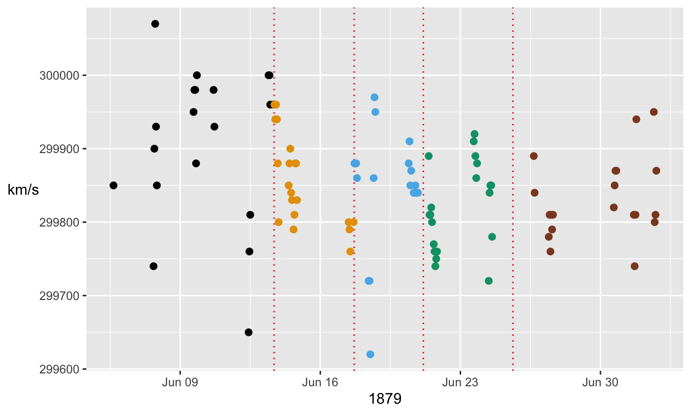
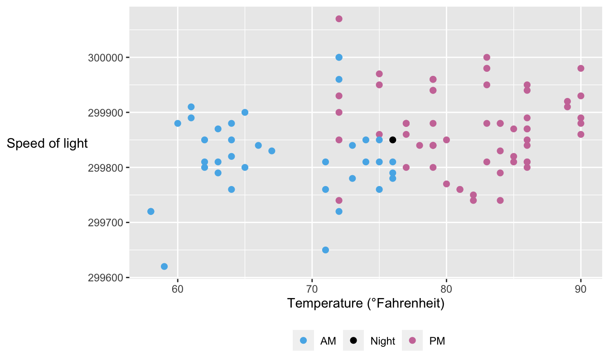
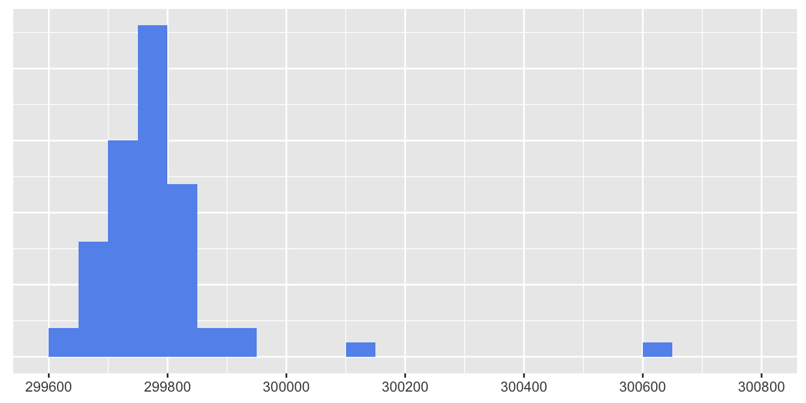
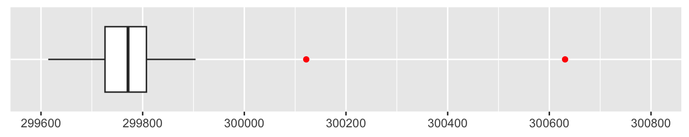
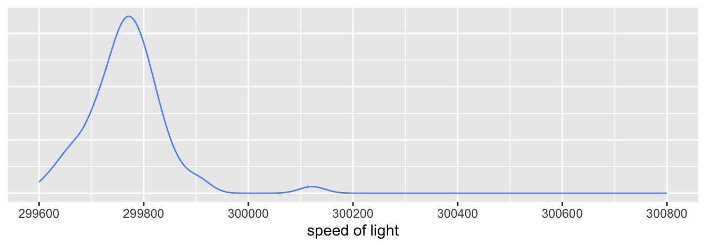
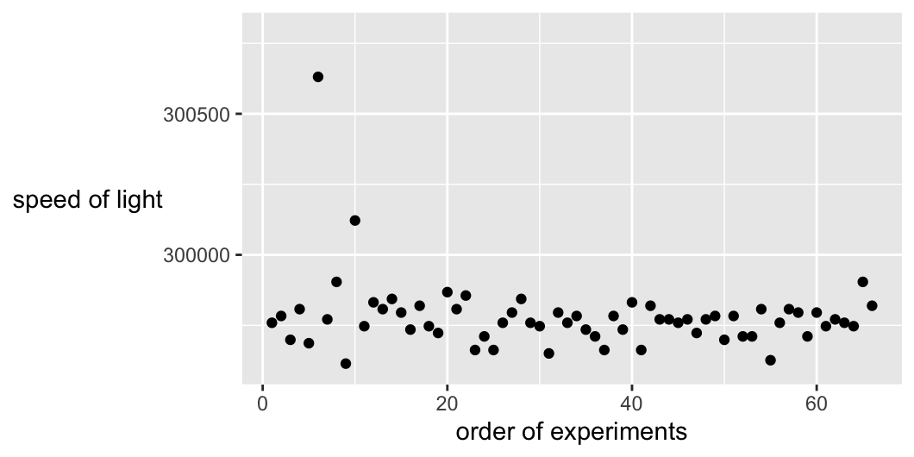
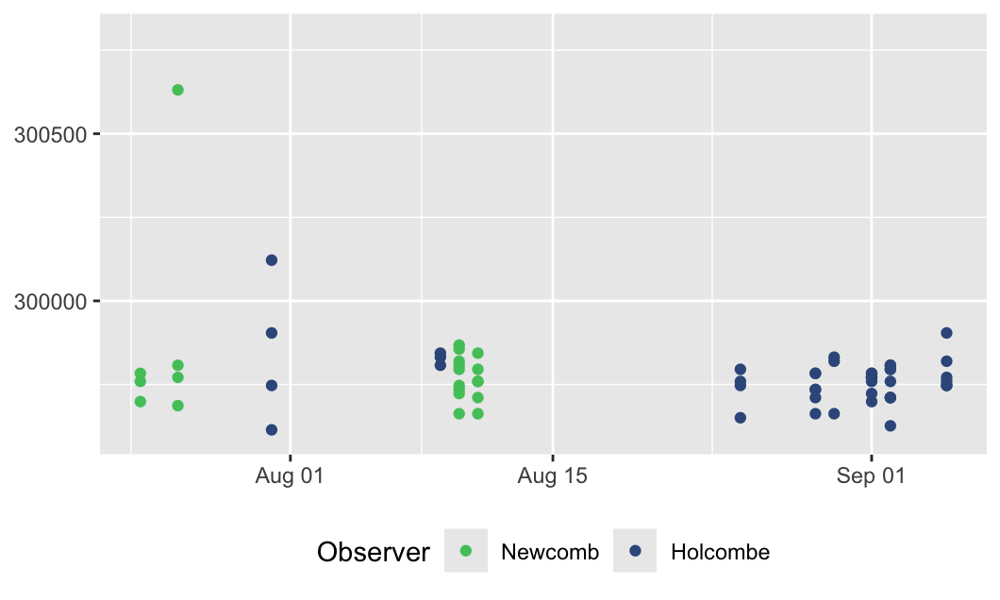
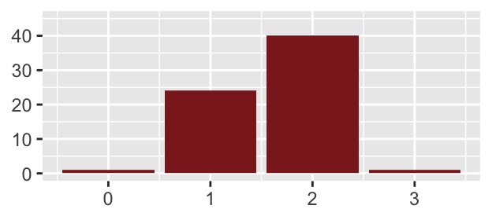
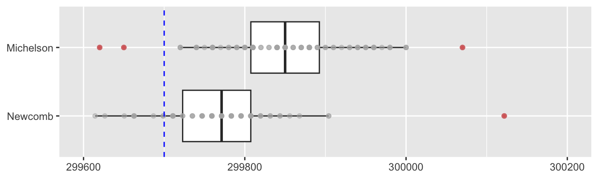

5 Measuring the speed of light
“Time flies. You can’t. They fly too fast.” (Children’s word puzzle)
Background The speed of light is a central physical constant. Several complex experiments were carried out in the second half of the 19th century to measure it, including Michelson’s 100 measurements made in the summer of 1879 (Michelson (1880)), and Newcomb’s measurements from 1882 (Newcomb (1891)).
Questions Are the estimates close to today’s value? How did Michelson’s and Newcomb’s estimates compare? Can the results be treated as independent random samples?
Sources Michelson’s report of 1880 for the U.S. Nautical Almanac Office and Newcomb’s paper of 1891.
Structure Michelson’s results of 100 experiments from 1879 included date, time of day, temperature, and estimate of the speed of light. Newcomb’s 66 experiments of 1882 included date, weights grading the observation quality, observer’s name, and estimate of the speed of light. Some experimental settings and intermediate measurements listed in the original sources have not been included.
5.1 Michelson, the Master of Light, and his data
Stigler (1977) used Michelson’s 1879 data in a study of robust estimators. For reasons of convenience he split the data into five sets of \(20\) measurements each. Several researchers have since assumed that that was how the experiments were carried out, but Michelson’s report makes clear it was not. Researchers have displayed the data as time series, using the order of the experiments as an equally spaced time index. Again, the original paper provides dates and there were some days with no observations and four which had as many as \(10\). Michelson’s detailed description includes a number of factors which varied between his experiments. To treat all the experiments as independent and identically distributed is a useful first approximation, but not an accurate reflection of what took place. MacKay & Oldford (2000) uses the dataset as a central example for their article on scientific and statistical method. They do respect the order and timing of the data and provide a complete copy of Michelson’s table of experimental results.
Figure 5.1 shows Michelson’s estimates of the speed of light in air by date and time. Measurements were made on 18 separate days starting on 5 June 1879 and ending on 2 July 1879. Experiments on the same day have been assumed to start at 9 in the morning with one hour gaps in between if recorded as A.M., and at 3 in the afternoon with one hour gaps in between if recorded as P.M. This was done to separate them. The five artificial groupings introduced by Stigler have been coloured, and red dotted lines drawn as boundaries between them.
Code
data(Mich1879)
Mich1879 <- Mich1879 %>% mutate(speed=299000+Value)
Mich1879 <- Mich1879 %>% mutate(datey=as.Date(dmy(Date)))
Mich1879 <- Mich1879 %>% mutate(t1=ifelse(Time=="AM", 9, 15))
Mich1879 <- Mich1879 %>% mutate(datez=datey + hours(t1))
Mich1879 <- Mich1879 %>% mutate(Exp=factor(rep(1:5, each=20)))
Mich1879 <- Mich1879 %>% group_by(datez) %>% mutate(id=seq(1,n()))
Mich1879 <- Mich1879 %>% ungroup() %>% mutate(datew=datez+hours(id))
Mich1879 <- Mich1879 %>% mutate(dt=difftime(datew, lag(datew), hours), avt=datew-dt/2)
colblindM <- c(colorblind_pal()(8)[1:4], "sienna4")
ptmichW <- ggplot(Mich1879, aes(datew, speed)) + theme(legend.position="none", axis.title.y=element_text(angle=0)) + ylab("km/s") + xlab("1879") + geom_vline(lty="dotted", colour="red", xintercept=c(Mich1879$avt[21], Mich1879$avt[41], Mich1879$avt[61], Mich1879$avt[81]))
ptmichX <- ptmichW + geom_point(aes(colour=Exp), size=2) + scale_colour_manual(values=colblindM)
ptmichX
Figure 5.1: Measurements of the speed of light in air by Michelson by date and time with dotted lines drawn to separate Stigler’s artificial groupings. There is a limited amount of overplotting due to exact equality of measurements close together in time.
Code
Michelson adjusted for temperature and refraction to convert his average estimate of the speed of light in air to the speed of light in a vacuum. Today the speed of light in a vacuum is given as 299792.5 km/s. Converting this to a speed in air using the inverse of Michelson’s conversion gives a value close to 299700 km/s. All but 2 of Michelson’s 100 results are higher than this.
The temperature for each experiment varied from just under 60° Fahrenheit, around 14.5° Celsius, in the morning to as high as 90° Fahrenheit or 32.2° Celsius in the afternoon. Figure 5.2 shows the estimates of speed of light in air vs. temperature. The very first reading was taken at night under electric light, marked black in the figure, but it was regarded by Michelson as unsatisfactory. There is little sign of any effect and this matches the magnitude of Michelson’s correction for temperature that amounted to just over 1 km/s for each additional degree Fahrenheit.
Code
Mich1879 <- Mich1879 %>% mutate(time=ifelse(Time=="Elec", "Night", Time))
colbl3 <- colorblind_pal()(8)[c(3, 1, 8)]
michTW <- ggplot(Mich1879, aes(Temperature, speed)) + ylab("Speed of light") + xlab("Temperature (°Fahrenheit)") +
theme(axis.title.y = element_text(angle = 0), legend.position="bottom", legend.title=element_blank())
michTX <- michTW + geom_point(size=2, aes(colour=time)) + scale_colour_manual(values=colbl3)
michTX
Figure 5.2: Michelson’s estimates of the speed of light in air by temperature, coloured by time of day
5.2 Newcomb, self-educated polymath, and his data
Simon Newcomb carried out three series of experiments from 1880 to 1882 and the results are all in his report (Newcomb (1891)). His conclusion there on p. 201 is that “The preceding investigations and discussions seem to show that our results should depend entirely on the measures of 1882 [i.e. the third series].”
The results from Newcomb’s third series of experiments from 1882 have also been used many times, sometimes in the order of the experiments, sometimes not. As the experimental setup and conditions changed over time, it is worth respecting the order and, where possible, the actual dates and times. There were 66 measurements made of the time taken in millionths of a second for light to travel a distance of 7.44242 kilometres in air. Stigler suggested in his article that the ‘true’ value would have been 24.83302 millionths of a second after taking account of Newcomb’s adjustments for mirror curvature and refraction.
Figure 5.3 shows a histogram of the data suggesting that there are two suspicious values, one at over 300600 km/s that is far away from the rest of the data and one at over 300100 km/s that is moderately away from the rest. Stigler writes that Newcomb excluded the higher of these two, but not the other one.
Code
data(newcomb)
newcomb <- newcomb %>% mutate(speed=7442420/Time)
ggplot(newcomb, aes(speed)) + geom_histogram(breaks=seq(299600, 300800, 50), fill="cornflowerblue") + scale_x_continuous(breaks=seq(299600, 300800, 200)) + ylab(NULL) + xlab(NULL) + theme(axis.ticks.y = element_blank(), axis.text.y = element_blank())
Figure 5.3: Histogram of measurements of the speed of light by Newcomb
Looking at data in simple graphics directly is an effective way of spotting obvious problems (like the case over 300600) and potential problems (like the case over 300100). Some statisticians may prefer to use a statistical test to see if there are outlying points, but there is not general agreement on which test or tests would be best. A boxplot is one possibility, as in Figure 5.4. This suggests that both cases are outliers.
Code

Figure 5.4: Boxplot of measurements of the speed of light by Newcomb
Figure 5.5 shows a further alternative, a kernel density estimate of the data, excluding the most extreme case. It does look as if the other outlier should be dropped as well.
Code

Figure 5.5: Density estimate of measurements of the speed of light by Newcomb excluding an outlier.
Newcomb’s paper provides details of each experiment and this information can be used too. Figure 5.6 plots the data in the order given in the paper. Stigler (1977) uses Newcomb’s order (not all republishers of the dataset do).
Code

Figure 5.6: Measurements of the speed of light by Newcomb displayed in the order the experiments were carried out
Viewing the data this way does make the potential outlier with the value of over 300100 look out of sync with the main part of the dataset. However, there is more information in Newcomb’s paper. There are the actual dates and order of the experiments and the names of the observers on those days. More than half of the observations in this series were made by Ensign Holcombe of the U.S. Navy, who joined Newcomb after Michelson became Professor in Cleveland in September 1880.
Figure 5.7 displays the estimates by the date they were made and coloured by who made them.
Code
newcomb <- newcomb %>% mutate(Year=1882)
newcomb <- newcomb %>% unite("date", c("Date", "Year"), sep="-", remove=FALSE)
newcomb <- newcomb %>% mutate(datey=as.Date(dmy(date)))
newct2XW <- ggplot(newcomb, aes(datey, speed)) + ylim(299600, 300800) + xlab(NULL) + ylab(NULL) + theme(legend.position="bottom")
newct2XX <- newct2XW + geom_point(aes(colour=Observer)) + scale_color_manual(values=c("#38598CFF", "#51C56AFF")) + guides(colour = guide_legend(reverse = TRUE))
newct2XX
Figure 5.7: Measurements of the speed of light by Newcomb in 1882 displayed by date, coloured by observer
Code
The second outlier of over 300100 does not look so outlying in the context of the four experiments by Holcomb on 31 July (the four dark blue dots in a vertical line to the left of 1 August). It is notable that the lowest data value was also amongst the four observations that day.
Analyses of these data generally assume that the observations can be treated as if they were independent and (mostly) identically distributed. The detailed descriptions in Newcomb’s paper of problems with individual experiments and of adjustments to experimental settings as they proceeded suggest this assumption should be looked at more closely. In addition, Newcomb attempted to assess the quality of the observations. He reported three weights for them, two for the quality of the images and one overall weight to be given to an observation (p. 170, Newcomb (1891)). Figure 5.8 gives the distribution of overall weights.

Figure 5.8: Weights assigned to each observation by Newcomb.
Only one case was assigned a weight of 0 (the extreme outlier) and only one the top weight of 3, the last measurement by Holcombe on 31st July, the second lowest value of the four observations that day. The weights for image quality bear little relationship to the overall weight. Newcomb wrote “Only a small range is assigned to the weights, because from the very nature of the case it is impossible to determine them with actual precision.”
5.3 Comparing the data of Michelson and Newcomb
Both researchers made measurements of the speed of light in air, averaged their results, and only then converted their final estimate to one for the speed of light in a vacuum. This meant adding 92 km/s for Michelson (Michelson (1880) p. 141) and 94 km/s for Newcomb (Newcomb (1891) p. 201). The main adjustment was to multiply the speed in air by the index of refraction of air at the temperature of the experiments. The technical details (and much more) are in their papers. Given the adjustments are so similar the estimates for the speed in air can be compared. The extreme outlier in the Newcomb data has been excluded for this comparison, so the horizontal scale is different from the scale of the earlier plots.
Code
cMN <- c(Mich1879$speed, newcomb$speed)
cMN <- data.frame(cMN)
cMN$group <- c(rep("Michelson", dim(Mich1879)[1]), rep("Newcomb", dim(newcomb)[1]))
names(cMN) <- c("speed", "Scientist")
ggplot(cMN %>% filter(speed < 300200), aes(fct_rev(Scientist), speed)) + geom_boxplot(outlier.colour="red") + geom_point(colour="grey70", alpha=0.5) + geom_hline(yintercept=299700, linetype="dashed", colour="blue") + scale_y_continuous(limits=c(299600, 300200), n.break=4) + ylab(NULL) + xlab(NULL) + coord_flip()
Figure 5.9: Boxplots and dotplots of estimates of the speed of light in air by Michelson in 1879 and by Newcomb in 1882 with the transformed value of today marked by a dashed blue line
Michelson’s estimates were higher than Newcomb’s and further away from the ‘true’ value. In 1924, some forty years later, using similar, but improved techniques, Michelson estimated the speed of light in vacuo to be 299796 km/s (Michelson (1927)), very close to-day’s 299792.458 km/s.
No intervals for the estimates have been given here. As Youden pointed out over 50 years ago (Youden (1972)), reported intervals for estimates of the values of physical constants included random error but not systematic error and that was typically larger.
Answers Newcomb’s estimates were closer to today’s value than Michelson’s. The individual experiments of each of the two researchers can only approximately be treated as independent random samples.
Further questions How have experiments to estimate the speed of light changed since Newcomb’s time? How have the estimates themselves changed?